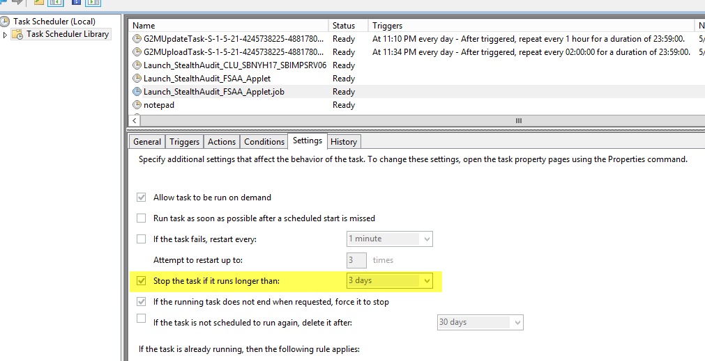

Summary: Scheduled task created to launch applet times out on Server 2012 or newer
Issue: When launching the applet in automatic or proxy mode using a scheduled task, the scheduled task times out after three, 3, days on Server 2012 or newer.
When FSAA deploys the applet, it deploys binaries, then creates a scheduled task with no trigger. It then launches the task manually (similar to right click > Run). By default, the task is set to stop if it runs for more than three, 3, days.

In older versions of Windows, this setting only applied when the task was launched via trigger. However, starting with Server 2012, this setting applies even if he task is not launched via a trigger.
Instructions: To resolve, apply SA 8.1 HF 065
https://na55.salesforce.com/kA0fhttps://stealthbits.zendesk.com/knowledge/articles/360043785191/en-us?brand_id=3600033514111000000kBXl
Product: StealthAUDIT
Module: SA - DC - FSAA - Activity;SA - DC - FSAA - DFS;SA - DC - FSAA - Permissions;SA - DC - FSAA - Sensitive Data
Versions: 7.1-8.1
Dev Ticket: SAFS-15172
Resolved In: 8.1 HF 065
Legacy Article ID: 1958